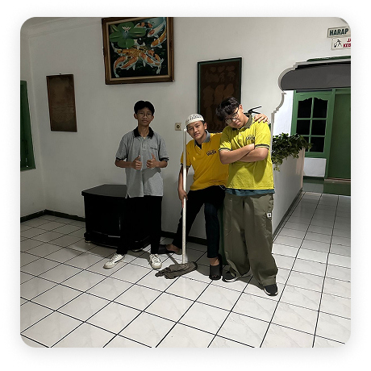
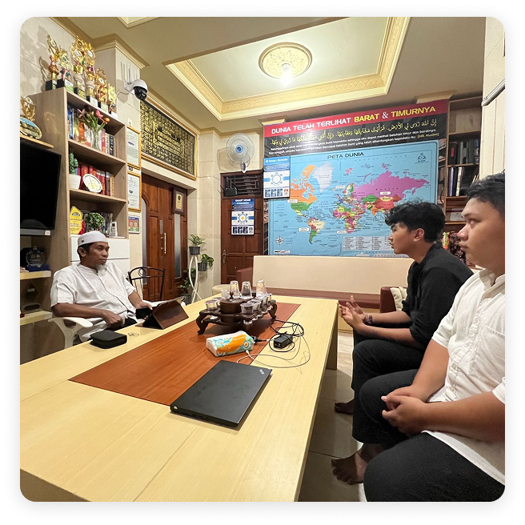
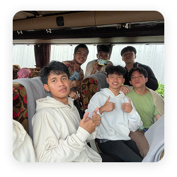

Business Survival

Tujuan Program Business Survival
Bagaimana Program Ini Berjalan


Nilai dan Pelajaran yang Didapat
Melalui Business Survival, santri belajar banyak hal berharga, seperti:
- Berani memulai dan tidak takut gagal.
- Berpikir strategis dalam keterbatasan.
- Menjaga amanah dan etika dalam setiap transaksi.
- Bersyukur atas hasil usaha, sekecil apa pun itu.
Penutup
Program Business Survival menjadi bukti bahwa IDN Boarding School tidak hanya mencetak santri yang ahli di bidang teknologi, tetapi juga berjiwa wirausaha dan tangguh dalam menghadapi kehidupan nyata.
Dari program ini, santri memahami bahwa keberhasilan sejati tidak diukur dari besarnya keuntungan, tetapi dari proses, kejujuran, dan manfaat yang diberikan kepada orang lain.
Ayo Daftarkan Sekarang Juga!
Daftar Santri Baru